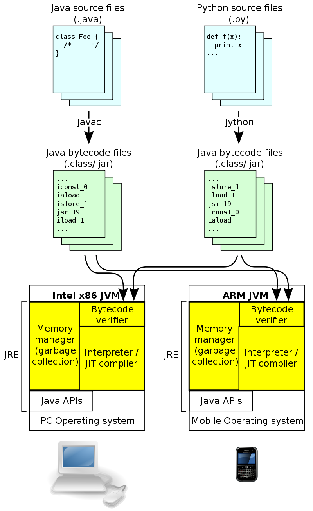

<!DOCTYPE html>
<html lang="zh">
<head>
    <meta charset="utf-8">
    
    <title>Python 基础 | Javmain&#39;s Wiki</title>
    
    
        <meta name="keywords" content="Python 基础">
    
    <meta name="viewport" content="width=device-width, initial-scale=1, maximum-scale=1">
    <meta name="description" content="什么是 Python 解释器？Python 解析器提供了程序的运行环。Python 是解析执行的，与C/C++之类的编译性语言编写的程序类比，Python 源码不需要从源文件转换成计算机使用的机器语言，也不需要经过连接器链接之后形成二进制可执行文件。当我们运行 Python 程序的时候，Python 解析器将源码转换为字节码，然后再由 Python 解析器来执行这些字节码。但是，Python 程序">
<meta property="og:type" content="article">
<meta property="og:title" content="Python 基础">
<meta property="og:url" content="https://wiki.51itzone.cn/wiki/ProgrammingLanguage/Python/python_learn/index.html">
<meta property="og:site_name" content="Javmain&#39;s Wiki">
<meta property="og:description" content="什么是 Python 解释器？Python 解析器提供了程序的运行环。Python 是解析执行的，与C/C++之类的编译性语言编写的程序类比，Python 源码不需要从源文件转换成计算机使用的机器语言，也不需要经过连接器链接之后形成二进制可执行文件。当我们运行 Python 程序的时候，Python 解析器将源码转换为字节码，然后再由 Python 解析器来执行这些字节码。但是，Python 程序">
<meta property="og:locale" content="zh-CN">
<meta property="og:image" content="https://wiki.51itzone.cn/wiki/ProgrammingLanguage/Python/python_learn/Java_virtual_machine_architecture.png">
<meta property="og:updated_time" content="2018-08-20T02:17:49.260Z">
<meta name="twitter:card" content="summary">
<meta name="twitter:title" content="Python 基础">
<meta name="twitter:description" content="什么是 Python 解释器？Python 解析器提供了程序的运行环。Python 是解析执行的，与C/C++之类的编译性语言编写的程序类比，Python 源码不需要从源文件转换成计算机使用的机器语言，也不需要经过连接器链接之后形成二进制可执行文件。当我们运行 Python 程序的时候，Python 解析器将源码转换为字节码，然后再由 Python 解析器来执行这些字节码。但是，Python 程序">
<meta name="twitter:image" content="https://wiki.51itzone.cn/wiki/ProgrammingLanguage/Python/python_learn/Java_virtual_machine_architecture.png">
    

    
        <link rel="alternate" href="/atom.xml" title="Javmain&#39;s Wiki" type="application/atom+xml">
    

    
        <link rel="icon" href="/css/images/favicon.ico">
    

    <link rel="stylesheet" href="/libs/font-awesome/css/font-awesome.min.css">
    <link rel="stylesheet" href="/libs/open-sans/styles.css">
    <link rel="stylesheet" href="/libs/source-code-pro/styles.css">

    <link rel="stylesheet" href="/css/style.css">
    <script src="/libs/jquery/2.1.3/jquery.min.js"></script>
    <script src="/libs/jquery/plugins/cookie/1.4.1/jquery.cookie.js"></script>
    
    
        <link rel="stylesheet" href="/libs/lightgallery/css/lightgallery.min.css">
    
    
        <link rel="stylesheet" href="/libs/justified-gallery/justifiedGallery.min.css">
    
    
        <script type="text/javascript">
(function(i,s,o,g,r,a,m) {i['GoogleAnalyticsObject']=r;i[r]=i[r]||function() {
(i[r].q=i[r].q||[]).push(arguments)},i[r].l=1*new Date();a=s.createElement(o),
m=s.getElementsByTagName(o)[0];a.async=1;a.src=g;m.parentNode.insertBefore(a,m)
})(window,document,'script','//www.google-analytics.com/analytics.js','ga');

ga('create', 'UA-113148178-2', 'auto');
ga('send', 'pageview');

</script>
    
    
    
        <script>
var _hmt = _hmt || [];
(function() {
    var hm = document.createElement("script");
    hm.src = "//hm.baidu.com/hm.js?6fa9f8a4fd0ff90a2cd8db47e2206eb8";
    var s = document.getElementsByTagName("script")[0];
    s.parentNode.insertBefore(hm, s);
})();
</script>

    


    
        <script async src="//busuanzi.ibruce.info/busuanzi/2.3/busuanzi.pure.mini.js"></script>
    
</head>
</html>
<body>
    <div id="container">
        <header id="header">
    <div id="header-main" class="header-inner">
        <div class="outer">
            <a href="/" id="logo">
                <i class="logo"></i>
                <span class="site-title">Javmain&#39;s Wiki</span>
            </a>
            <nav id="main-nav">
                
            </nav>
            
            <div id="search-form-wrap">

    <form class="search-form">
        <input type="text" class="ins-search-input search-form-input" placeholder="搜索">
        <button type="submit" class="search-form-submit"></button>
    </form>
    <div class="ins-search">
    <div class="ins-search-mask"></div>
    <div class="ins-search-container">
        <div class="ins-input-wrapper">
            <input type="text" class="ins-search-input" placeholder="想要查找什么...">
            <span class="ins-close ins-selectable"><i class="fa fa-times-circle"></i></span>
        </div>
        <div class="ins-section-wrapper">
            <div class="ins-section-container"></div>
        </div>
    </div>
</div>
<script>
(function (window) {
    var INSIGHT_CONFIG = {
        TRANSLATION: {
            POSTS: '文章',
            PAGES: '页面',
            CATEGORIES: '分类',
            TAGS: '标签',
            UNTITLED: '(未命名)',
        },
        ROOT_URL: '/',
        CONTENT_URL: '/content.json',
    };
    window.INSIGHT_CONFIG = INSIGHT_CONFIG;
})(window);
</script>
<script src="/js/insight.js"></script>

</div>
        </div>
    </div>
    <div id="main-nav-mobile" class="header-sub header-inner">
        <table class="menu outer">
            <tr>
                
                <td>
                    
    <div class="search-form">
        <input type="text" class="ins-search-input search-form-input" placeholder="搜索">
    </div>

                </td>
            </tr>
        </table>
    </div>
</header>

        <div class="outer">
            
            
                <aside id="sidebar">
   
        
    <div class="widget-wrap" id="categories">
        <h3 class="widget-title">
            <span>目录</span>
            &nbsp;
            <a id="allExpand" href="#">
                <i class="fa fa-angle-double-down fa-2x"></i>
            </a>
        </h3>
        
        
        
         <ul class="unstyled" id="tree"> 
                    <li class="directory">
                        <a href="#" data-role="directory">
                            <i class="fa fa-folder"></i>
                            &nbsp;
                            Algorithm
                        </a>
                         <ul class="unstyled" id="tree"> 
                    <li class="directory">
                        <a href="#" data-role="directory">
                            <i class="fa fa-folder"></i>
                            &nbsp;
                            DataStructure
                        </a>
                         <ul class="unstyled" id="tree">  <li class="file"><a href="/wiki/Algorithm/DataStructure/data-structure/">数据结构基本概念</a></li>  <li class="file"><a href="/wiki/Algorithm/DataStructure/stcak-and-queue/">栈和队列</a></li>  </ul> 
                    </li> 
                     </ul> 
                    </li> 
                    
                    <li class="directory">
                        <a href="#" data-role="directory">
                            <i class="fa fa-folder"></i>
                            &nbsp;
                            BasicSkills
                        </a>
                         <ul class="unstyled" id="tree">  <li class="file"><a href="/wiki/BasicSkills/GitNotes/">Git 笔记</a></li>  </ul> 
                    </li> 
                    
                    <li class="directory">
                        <a href="#" data-role="directory">
                            <i class="fa fa-folder"></i>
                            &nbsp;
                            BigData
                        </a>
                         <ul class="unstyled" id="tree"> 
                    <li class="directory">
                        <a href="#" data-role="directory">
                            <i class="fa fa-folder"></i>
                            &nbsp;
                            Elsatic
                        </a>
                         <ul class="unstyled" id="tree">  <li class="file"><a href="/wiki/BigData/Elsatic/tokenizer/">ES 分词器</a></li>  </ul> 
                    </li> 
                    
                    <li class="directory">
                        <a href="#" data-role="directory">
                            <i class="fa fa-folder"></i>
                            &nbsp;
                            Kafka
                        </a>
                         <ul class="unstyled" id="tree">  <li class="file"><a href="/wiki/BigData/Kafka/kafka/"></a></li>  </ul> 
                    </li> 
                     </ul> 
                    </li> 
                    
                    <li class="directory">
                        <a href="#" data-role="directory">
                            <i class="fa fa-folder"></i>
                            &nbsp;
                            DistributedSystem
                        </a>
                         <ul class="unstyled" id="tree"> 
                    <li class="directory">
                        <a href="#" data-role="directory">
                            <i class="fa fa-folder"></i>
                            &nbsp;
                            Rabbitmq
                        </a>
                         <ul class="unstyled" id="tree">  <li class="file"><a href="/wiki/DistributedSystem/Rabbitmq/rabbitmq/">RabbitMQ 详解</a></li>  </ul> 
                    </li> 
                     </ul> 
                    </li> 
                    
                    <li class="directory">
                        <a href="#" data-role="directory">
                            <i class="fa fa-folder"></i>
                            &nbsp;
                            MachineLeaning
                        </a>
                         <ul class="unstyled" id="tree"> 
                    <li class="directory">
                        <a href="#" data-role="directory">
                            <i class="fa fa-folder"></i>
                            &nbsp;
                            math
                        </a>
                         <ul class="unstyled" id="tree"> 
                    <li class="directory">
                        <a href="#" data-role="directory">
                            <i class="fa fa-folder"></i>
                            &nbsp;
                            LinearAlgebra
                        </a>
                         <ul class="unstyled" id="tree">  <li class="file"><a href="/wiki/MachineLeaning/math/LinearAlgebra/LinearAlgebraBasic/">线性代数基础</a></li>  </ul> 
                    </li> 
                     </ul> 
                    </li> 
                     </ul> 
                    </li> 
                    
                    <li class="directory open">
                        <a href="#" data-role="directory">
                            <i class="fa fa-folder-open"></i>
                            &nbsp;
                            ProgrammingLanguage
                        </a>
                         <ul class="unstyled" id="tree"> 
                    <li class="directory open">
                        <a href="#" data-role="directory">
                            <i class="fa fa-folder-open"></i>
                            &nbsp;
                            Python
                        </a>
                         <ul class="unstyled" id="tree">  <li class="file active"><a href="/wiki/ProgrammingLanguage/Python/python_learn/">Python 基础</a></li>  </ul> 
                    </li> 
                     </ul> 
                    </li> 
                     <li class="file"><a href="/wiki/index/">Welcome Javmain's Wiki</a></li>  </ul> 
    </div>
    <script>
        $(document).ready(function() {
            var iconFolderOpenClass  = 'fa-folder-open';
            var iconFolderCloseClass = 'fa-folder';
            var iconAllExpandClass = 'fa-angle-double-down';
            var iconAllPackClass = 'fa-angle-double-up';
            // Handle directory-tree expansion:
            // 左键单独展开目录
            $(document).on('click', '#categories a[data-role="directory"]', function (event) {
                event.preventDefault();

                var icon = $(this).children('.fa');
                var expanded = icon.hasClass(iconFolderOpenClass);
                var subtree = $(this).siblings('ul');
                icon.removeClass(iconFolderOpenClass).removeClass(iconFolderCloseClass);
                if (expanded) {
                    if (typeof subtree != 'undefined') {
                        subtree.slideUp({ duration: 100 });
                    }
                    icon.addClass(iconFolderCloseClass);
                } else {
                    if (typeof subtree != 'undefined') {
                        subtree.slideDown({ duration: 100 });
                    }
                    icon.addClass(iconFolderOpenClass);
                }
            });
            // 右键展开下属所有目录
            $('#categories a[data-role="directory"]').bind("contextmenu", function(event){
                event.preventDefault();
                
                var icon = $(this).children('.fa');
                var expanded = icon.hasClass(iconFolderOpenClass);
                var listNode = $(this).siblings('ul');
                var subtrees = $.merge(listNode.find('li ul'), listNode);
                var icons = $.merge(listNode.find('.fa'), icon);
                icons.removeClass(iconFolderOpenClass).removeClass(iconFolderCloseClass);
                if(expanded) {
                    subtrees.slideUp({ duration: 100 });
                    icons.addClass(iconFolderCloseClass);
                } else {
                    subtrees.slideDown({ duration: 100 });
                    icons.addClass(iconFolderOpenClass);
                }
            })
            // 展开关闭所有目录按钮
            $(document).on('click', '#allExpand', function (event) {
                event.preventDefault();
                
                var icon = $(this).children('.fa');
                var expanded = icon.hasClass(iconAllExpandClass);
                icon.removeClass(iconAllExpandClass).removeClass(iconAllPackClass);
                if(expanded) {
                    $('#sidebar .fa.fa-folder').removeClass('fa-folder').addClass('fa-folder-open')
                    $('#categories li ul').slideDown({ duration: 100 });
                    icon.addClass(iconAllPackClass);
                } else {
                    $('#sidebar .fa.fa-folder-open').removeClass('fa-folder-open').addClass('fa-folder')
                    $('#categories li ul').slideUp({ duration: 100 });
                    icon.addClass(iconAllExpandClass);
                }
            });  
        });
    </script>

    
    <div id="toTop" class="fa fa-angle-up"></div>
</aside>
            
            <section id="main"><article id="post-ProgrammingLanguage/Python/python_learn" class="article article-type-post" itemscope="" itemprop="blogPost">
    <div class="article-inner">
        
        
            <header class="article-header">
                
                    <div class="article-meta">
                        
    <div class="article-category">
    	<i class="fa fa-folder"></i>
        <a class="article-category-link" href="/categories/ProgrammingLanguage/">ProgrammingLanguage</a><i class="fa fa-angle-right"></i><a class="article-category-link" href="/categories/ProgrammingLanguage/Python/">Python</a>
    </div>

                        
                        
    <div class="article-date">
        <i class="fa fa-calendar"></i>
        <a href="/wiki/ProgrammingLanguage/Python/python_learn/">
            <time datetime="2018-08-20T02:17:49.260Z" itemprop="datePublished">2018-08-20</time>
        </a>
    </div>


                        
                            <i class="fa fa-bar-chart"></i>
                            <span id="busuanzi_container_site_pv"><span id="busuanzi_value_page_pv"></span></span>    
                        
                        
                            <div class="article-meta-button">
                                <a href="https://github.com/javmain/wiki-site/raw/master/source/_posts/ProgrammingLanguage/Python/python_learn.md" rel="external nofollow noopener noreferrer" target="_blank"> Source </a>
                            </div>
                            <div class="article-meta-button">
                                <a href="https://github.com/javmain/wiki-site/edit/master/source/_posts/ProgrammingLanguage/Python/python_learn.md" rel="external nofollow noopener noreferrer" target="_blank"> Edit </a>
                            </div>
                            <div class="article-meta-button">
                                <a href="https://github.com/javmain/wiki-site/commits/master/source/_posts/ProgrammingLanguage/Python/python_learn.md" rel="external nofollow noopener noreferrer" target="_blank"> History </a>
                            </div>
                        
                    </div>
                
                
    
        <h1 class="article-title" itemprop="name">
            Python 基础
        </h1>
    

            </header>
        
        
        <div class="article-entry" itemprop="articleBody">
        
        
            
        
        
            <h1 id="什么是-Python-解释器？"><a href="#什么是-Python-解释器？" class="headerlink" title="什么是 Python 解释器？"></a>什么是 Python 解释器？</h1><p>Python 解析器提供了程序的运行环。Python 是解析执行的，与C/C++之类的编译性语言编写的程序类比，Python 源码不需要从源文件转换成计算机使用的机器语言，也不需要经过连接器链接之后形成二进制可执行文件。当我们运行 Python 程序的时候，Python 解析器将源码转换为字节码，然后再由 Python 解析器来执行这些<a href="https://zh.wikipedia.org/wiki/%E5%AD%97%E8%8A%82%E7%A0%81" rel="external nofollow noopener noreferrer" target="_blank">字节码</a>。但是，Python 程序每次运行都需要转换成字节码，然后再由虚拟机把字节码转换成机器语言，最后才能在硬件上运行。与编译性语言相比，每次多出了编译和链接的过程，性能会受到一定的影响。</p>
<p>官方版本的解释器：CPython。这个解释器是用C语言开发的，所以叫CPython。在命令行下运行 python 命令就是启动 CPython 解释器。</p>
<h1 id="什么是编译型语言和解释型语言"><a href="#什么是编译型语言和解释型语言" class="headerlink" title="什么是编译型语言和解释型语言"></a>什么是编译型语言和解释型语言</h1><ul>
<li><p><strong>编译型语言</strong>实现的，如：C、C++、Fortran、Pascal、Ada。由编译型语言编写的源程序需要经过<strong>编译</strong>,<strong>汇编</strong>和<strong>链接</strong>才能输出目标代码，然后由机器加载到内存中执行目标代码。目标代码是有机器指令组成，不能独立运行，因为源程序中可能使用了一些汇编程序不能解释引用的库函数，而库函数又不在源程序中，此时还需要链接程序完成外部引用和目标模板调用的链接任务，最后才能输出可执行代码。</p>
</li>
<li><p><strong>解释型语言</strong>，解释器不产生目标机器代码，而是产生<strong>中间代码</strong>，这种中间代码与机器代码不同，中间代码的解释是由软件支持的，不能直接使用在硬件上。该软件解释器通常会导致执行效率较低，用解释型语言编写的程序是由另一个可以理解中间代码的解释程序执行的。和编译的程序不同的是, 解释程序的任务是逐一将源代码的语句解释成可执行的机器指令，不需要将源程序翻译成目标代码再执行。对于解释型语言，需要一个专门的解释器来执行该程序， 每条语句只有在执行是才能被翻译，这种解释型语言每执行一次就翻译一次，因而效率低下。</p>
</li>
<li><p>Java 解释器，也称 <a href="https://zh.wikipedia.org/wiki/Java%E8%99%9A%E6%8B%9F%E6%9C%BA" rel="external nofollow noopener noreferrer" target="_blank">Java 虚拟机</a>, Java 程序是需要编译的，但是没有直接编译成机器语言，而是编译成字节码， 然后在 Java 虚拟机上用解释的方式执行 <a href="https://zh.wikipedia.org/wiki/Java%E5%AD%97%E8%8A%82%E7%A0%81" rel="external nofollow noopener noreferrer" target="_blank">Java 字节码</a>。Python 也使用了类似的方式，先将 Python 编译成 Python 字节码，然后由一个专门的 Python 字节码解释器负责解释执行字节码。</p>
</li>
<li><p>Python 是一门解释语言，但是出于效率的考虑，提供了一种编译的方法。编译之后就得到 pyc 文件，存储了字节码。Python 这点和 Java 很类似，但是Java 与 Python 不同的是，Python 是一个解释型的语言，所以编译字节码不是一个强制的操作，事实上，编译是一个自动的过程，一般不会在意它的存在。编译成字节码可以节省加载模块的时间，提高效率。</p>
</li>
</ul>
<p></p>

            </div>
        
        <footer class="article-footer">
        </footer>
    </div>
</article>


    
<nav id="article-nav">
    
        <a href="/wiki/DistributedSystem/Rabbitmq/rabbitmq/" id="article-nav-newer" class="article-nav-link-wrap">
            <strong class="article-nav-caption">上一篇</strong>
            <div class="article-nav-title">
                
                    RabbitMQ 详解
                
            </div>
        </a>
    
    
        <a href="/wiki/Algorithm/DataStructure/stcak-and-queue/" id="article-nav-older" class="article-nav-link-wrap">
            <strong class="article-nav-caption">下一篇</strong>
            <div class="article-nav-title">栈和队列</div>
        </a>
    
</nav>


    
    
        <section id="comments"> 
    <div id="disqus_thread">
        <noscript>Please enable JavaScript to view the <a href="//disqus.com/?ref_noscript">comments powered by Disqus.</a></noscript>
    </div>
 </section>
    

</section>
        </div>
        <footer id="footer">
    <div class="outer">
        <div id="footer-info" class="inner">
            Javmain &copy; 2018 
            <a rel="external nofollow noopener noreferrer" href="http://creativecommons.org/licenses/by-nc-nd/4.0/" target="_blank"></a>
            <br> Powered by <a href="http://hexo.io/" target="_blank" rel="external nofollow noopener noreferrer">Hexo</a>. Theme - <a href="https://github.com/zthxxx/hexo-theme-Wikitten" rel="external nofollow noopener noreferrer" target="_blank">wikitten</a>
            
                <br>
                <span id="busuanzi_container_site_pv"><i class="fa fa-eye"></i> <span id="busuanzi_value_site_pv"></span></span>
                &nbsp;|&nbsp;
                <span id="busuanzi_container_site_pv"><i class="fa fa-user"></i> <span id="busuanzi_value_site_uv"></span></span>
            
        </div>
    </div>
</footer>

        
    
    <script>
    var disqus_config = function () {
        
            this.page.url = 'https://wiki.51itzone.cn/wiki/ProgrammingLanguage/Python/python_learn/';
        
        this.page.identifier = 'ProgrammingLanguage/Python/python_learn';
    };
    (function() { 
        var d = document, s = d.createElement('script');  
        s.src = '//' + 'javmain' + '.disqus.com/embed.js';
        s.setAttribute('data-timestamp', +new Date());
        (d.head || d.body).appendChild(s);
    })();
</script>


    
        <script src="/libs/lightgallery/js/lightgallery.min.js"></script>
        <script src="/libs/lightgallery/js/lg-thumbnail.min.js"></script>
        <script src="/libs/lightgallery/js/lg-pager.min.js"></script>
        <script src="/libs/lightgallery/js/lg-autoplay.min.js"></script>
        <script src="/libs/lightgallery/js/lg-fullscreen.min.js"></script>
        <script src="/libs/lightgallery/js/lg-zoom.min.js"></script>
        <script src="/libs/lightgallery/js/lg-hash.min.js"></script>
        <script src="/libs/lightgallery/js/lg-share.min.js"></script>
        <script src="/libs/lightgallery/js/lg-video.min.js"></script>
    
    
        <script src="/libs/justified-gallery/jquery.justifiedGallery.min.js"></script>
    
    
        <script type="text/x-mathjax-config">
    MathJax.Hub.Config({
        tex2jax: {
            inlineMath: [ ["$","$"], ["\\(","\\)"] ],
            skipTags: ['script', 'noscript', 'style', 'textarea', 'pre', 'code'],
            processEscapes: true,
            TeX: {
                equationNumbers: {
                  autoNumber: 'AMS'
                }
            }
        }
    });
    MathJax.Hub.Queue(function() {
        var all = MathJax.Hub.getAllJax();
        for (var i = 0; i < all.length; ++i)
            all[i].SourceElement().parentNode.className += ' has-jax';
    });
</script>
<script async src="//cdn.bootcss.com/mathjax/2.7.4/MathJax.js?config=TeX-AMS-MML_HTMLorMML"></script>
    


<!-- Custom Scripts -->
<script src="/js/main.js"></script>

    </div>
</body>
